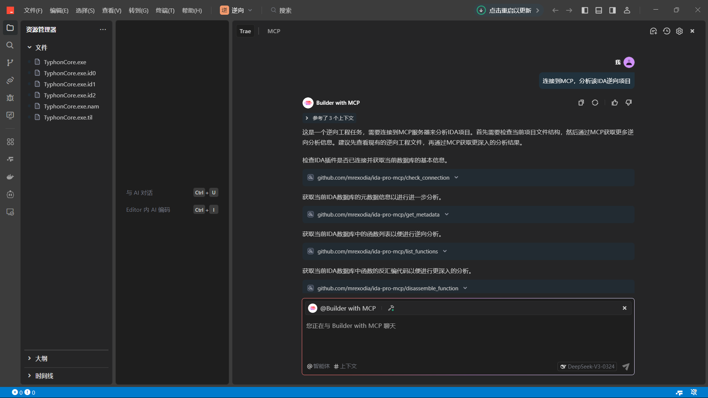

使用IDA+Trae+MCP免费实现AI辅助逆向
最近在研究逆向工程时，我偶然发现了IDA-Pro-MCP项目。这是一个IDA Pro插件，可以通过VS Code的AI插件Cline实现AI辅助逆向分析。但这种方法需要用户自己提供API密钥，而且这类任务消耗token非常快 - 据我看到的文章介绍，博主仅仅做了个演示就花费了好几块钱。
作为一个平民玩家，我自然不愿意为这类服务付费。这时我想到了免费的AI IDE：Trae。恰好Trae最近也推出了MCP功能，这让我萌生了一个想法 - 能否利用Trae的MCP功能来实现免费的AI辅助逆向？经过一番探索和尝试，我终于找到了解决方案，整个过程不需要花费一分钱！
下面我将详细介绍如何通过Trae的MCP功能实现AI辅助逆向分析...

准备工作：安装Trae最新版，IDA Pro 8.3或更高版本，Python3.11或更高版本，IDA-Pro-MCP
Trae下载链接：https://www.trae.com.cn
IDA Pro下载链接：https://my.hex-rays.com/download-center
IDA Pro破解版：IDA Pro 9.0 RC1IDA Pro 8.3
IDA-Pro-MCP的GitHub仓库：https://github.com/mrexodia/ida-pro-mcp
安装IDA-Pro-MCP，失败挂梯子：
pip install --upgrade git+https://github.com/mrexodia/ida-pro-mcp
ida-pro-mcp --install
// 如果无法使用ida-pro-mcp --install命令，则cd到python目录下Scripts目录，运行ida-pro-mcp.exe --install
使用IDA Pro随便打开一个exe，点击Edit->Plugins->MCP，如果Output里输出了[MCP] Server started at http://localhost:13337即安装成功
创建一个文件夹，把要逆向的exe放在里面，IDA Pro打开该exe，点击Edit->Plugins->MCP
打开Trae，在Trae中打开该文件夹，在右侧的AI对话界面，点击右上角的AI功能管理按钮，图标为设置齿轮，点击MCP。添加一个新的MCP服务器，手动配置，配置json如下：
{
"mcpServers": {
"github.com/mrexodia/ida-pro-mcp": {
"isActive": true,
"command": "C:\\Users\\你的用户名\\AppData\\Local\\Programs\\Python\\你的python版本\\python.exe",
"args": [
"C:\\Users\\你的用户名\\AppData\\Local\\Programs\\Python\\你的python版本\\Lib\\site-packages\\ida_pro_mcp\\server.py"
],
"timeout": 1800,
"disabled": false,
"autoApprove": [
"check_connection",
"get_metadata",
"get_function_by_name",
"get_function_by_address",
"get_current_address",
"get_current_function",
"convert_number",
"list_functions",
"list_strings",
"search_strings",
"decompile_function",
"disassemble_function",
"get_xrefs_to",
"get_entry_points",
"set_comment",
"rename_local_variable",
"rename_global_variable",
"set_global_variable_type",
"rename_function",
"set_function_prototype",
"declare_c_type",
"set_local_variable_type"
],
"alwaysAllow": [
"check_connection",
"get_metadata",
"get_function_by_name",
"get_function_by_address",
"get_current_address",
"get_current_function",
"convert_number",
"list_functions",
"list_strings",
"search_strings",
"decompile_function",
"disassemble_function",
"get_xrefs_to",
"get_entry_points",
"set_comment",
"rename_local_variable",
"rename_global_variable",
"set_global_variable_type",
"rename_function",
"set_function_prototype",
"declare_c_type",
"set_local_variable_type"
],
"name": "github.com/mrexodia/ida-pro-mcp"
}
}
}
添加后运行测试是否可用，不可用根据报错信息调整配置
配置完成后，回到AI对话页面，智能体改成@Builder with MCP，工具使用刚刚配置的MCP
发送“连接到MCP，并分析IDA逆向项目”，检查是否成功
可以设置自动运行不需要手动确认
----Written by tmyy | 2025-4-29----